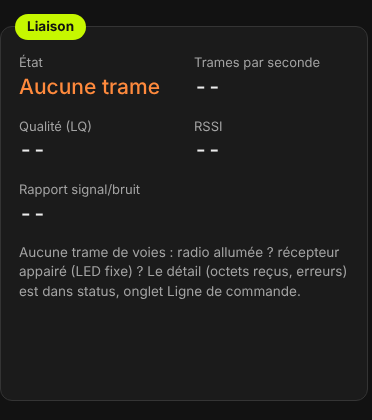
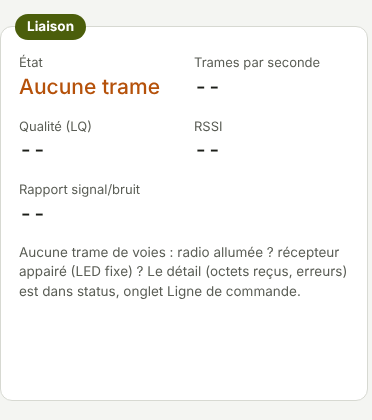
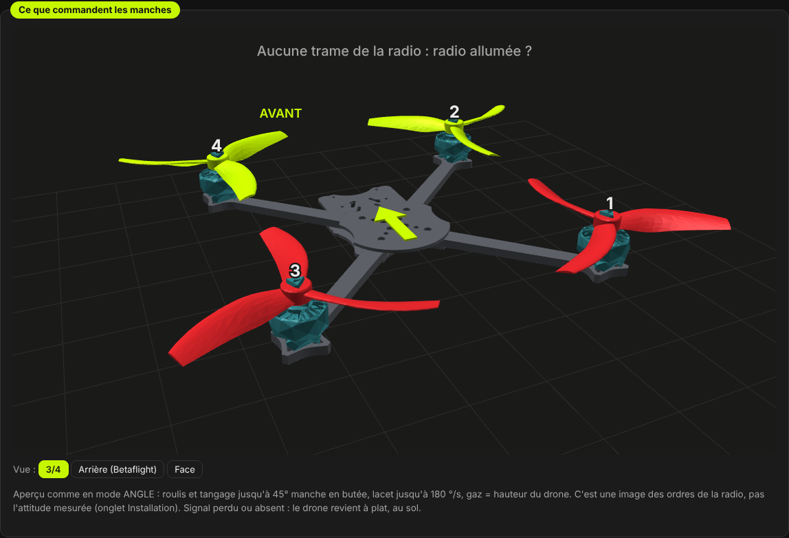
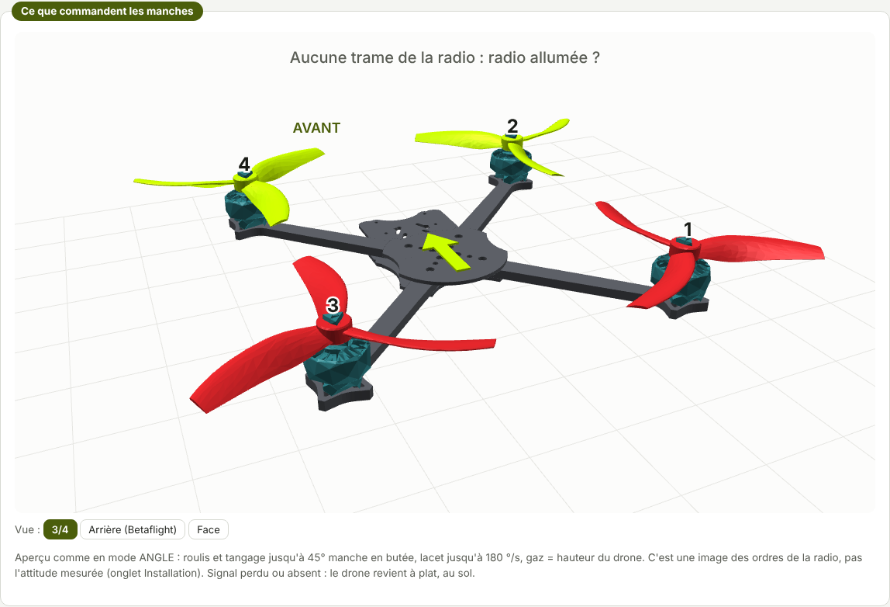
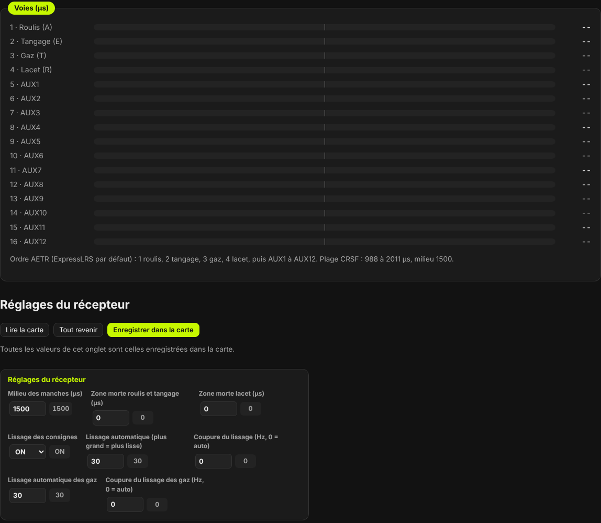
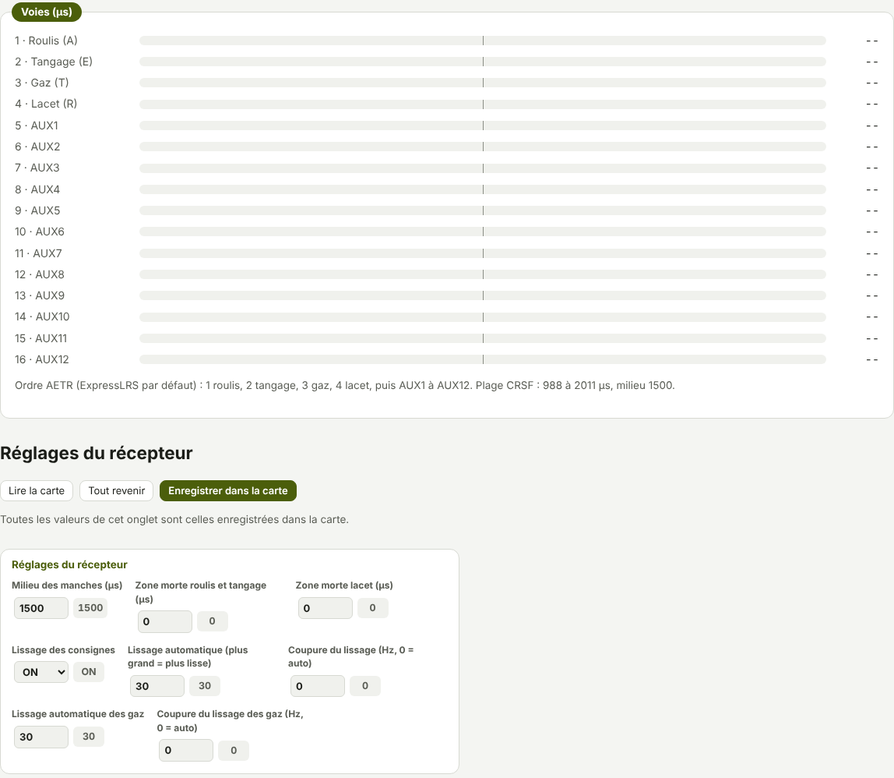

TRUEGLIDE
TRUEGLIDE Onglet Récepteur
L'onglet Récepteur montre ce que la carte reçoit de la radio : état de la liaison, trames par seconde, qualité, les 16 voies en µs, et un drone 3D qui bouge avec les manches. En bas : zones mortes et lissage.
XPro lit un récepteur CRSF (ExpressLRS) branché sur l'UART2 (plots T2 / R2), à 420 000 bauds. Le port se règle dans l'onglet Ports (colonne Serial Rx). Pour un essai sur USB seul, le récepteur est alimenté par l'USB.
La liaison
Le cadre Liaison donne l'État, les Trames par seconde, la Qualité (LQ), le RSSI et le Rapport signal/bruit. Une valeur absente, ou vieille de plus d'une seconde, s'affiche « -- ».


Mesures de KarRmen le 14/10/2026 (firmware 0.3.1, USB seul, radio allumée) : état « Active », 308 trames par seconde, LQ 100 % (99 %), RSSI −28 dBm, rapport signal/bruit 11 dB. Radio éteinte : « SIGNAL PERDU » et bip de perte radio ; rallumée : retour à « ACTIF », 314 trames par seconde, LQ 98 %.
Le nombre de trames par seconde suit le débit choisi dans ExpressLRS. Ce débit, la puissance et la phrase de liaison se règlent dans le récepteur et la radio, pas dans XPro. La phrase de liaison est un secret : ne jamais l'envoyer ni la publier.
Interrupteurs de KarRmen
Le cadre Interrupteurs de KarRmen sous Betaflight rappelle ses plages (relevé du diff all
Betaflight 2025.12.2 du 14/10/2026), pour vérifier les interrupteurs de la radio :
| Voie | Position |
|---|---|
| AUX1 (voie 5) | haut (1900 à 2100) : LAUNCH CONTROL |
| AUX2 (voie 6) | haut (1925 à 2100) : armement |
| AUX3 (voie 7) | bas (900 à 1075) : ANGLE · milieu (1400 à 1600) : HORIZON · haut : acro |
| AUX4 (voie 8) | haut (1900 à 2100) : ALTHOLD |
Les plages que la carte utilise vraiment se règlent dans l'onglet Modes.
Ce que commandent les manches
Le drone 3D obéit aux manches, comme en mode ANGLE :
- roulis et tangage : jusqu'à 45° d'inclinaison, manche en butée ;
- lacet : rotation jusqu'à 180 °/s ;
- gaz : hauteur du drone.
C'est une image des ordres de la radio, pas l'attitude mesurée (celle-ci est dans l'onglet Installation). Signal perdu ou absent : le drone revient à plat, au sol.
Les boutons Vue choisissent l'angle de vue : 3/4, Arrière (Betaflight) (derrière le drone, presque à l'horizontale, comme on le pilote) ou Face (nez vers l'écran). Le navigateur retient le choix, qui vaut aussi pour l'onglet Installation.


Les voies
Le cadre Voies (µs) a une barre par voie, de 1 à 16. Ordre AETR (celui d'ExpressLRS par défaut) :
1 roulis (A), 2 tangage (E), 3 gaz (T), 4 lacet (R), puis AUX1 à AUX12 (voies 5 à 16). La plage CRSF va de 988 à
2011 µs, milieu 1500. Une voie inconnue s'affiche « -- ». La commande rx de la ligne de commande
donne les mêmes informations.


Réglages du récepteur
| Réglage | Ce qu'il fait | Défaut |
|---|---|---|
Milieu des manchesmid_rc | Valeur du manche au centre, en µs. | 1500 |
Zone morte roulis et tangagedeadband | Autour du milieu, en µs, le manche ne commande rien. | 0 |
Zone morte lacetyaw_deadband | Même chose pour le lacet. | 0 |
Lissage des consignesrc_smoothing | Lisse les ordres de la radio entre deux trames. | ON |
Lissage automatiquerc_smoothing_auto_factor | Plus grand = plus lisse. La coupure vaut le débit des trames divisé par (1 + facteur / 10). | 30 |
Coupure du lissagerc_smoothing_setpoint_cutoff | En Hz ; 0 = automatique. | 0 |
Lissage automatique des gazrc_smoothing_auto_factor_throttle | Même chose pour les gaz. | 30 |
Coupure du lissage des gazrc_smoothing_throttle_cutoff | En Hz ; 0 = automatique. | 0 |
Sous Betaflight, KarRmen avait deadband = 10 et yaw_deadband = 15 (relevé du
14/10/2026). Enregistrer dans la carte garde les changements.
Aucune trame ?
- La radio est-elle allumée ? Le récepteur est-il appairé (LED fixe) ?
- L'UART2 est-il bien en Serial Rx dans l'onglet Ports ?
- Le détail (octets reçus, erreurs) est dans
status, onglet Ligne de commande.